Live early warning: every decision and its evidence
Each window is 5 min (or an hour, in the Day 2 replay) of video from the 3 cameras, scored by live_watch.py.
Per window you see the alerts with their clips, then EVERY cow with her numbers vs the herd in the same window, how her
risk moved and why she was or was not alerted, then EVERY close crop the vision model checked for clinical signs and what
happened to each flag. Risk is a ranking index (0-1, the 48 h Level 2 score as the start), not a probability of disease.
Alerts from the 48 h BRD risk (the morning list)
On start, every cow gets a tier from the Level 2 ranking (brd_risk.csv); 3 cow(s) got a push alert with Level 2's
video clips. Each live window re-evaluates the tier; moving up is an alert, moving down is logged.
- Pull and examine: a confirmed visible clinical sign (Level 2 signs_present, or a live confirmed sign)
- Check on the next pen ride: rank ≤ 3, in the top 3 in ≥ 60% of time-block resamples, confidence medium/high (live: risk ≥ 0.25 and top 3)
- Watch list: rank ≤ 5 or top 3 in ≥ 20% of resamples (dashboard only, no push)
- Normal: everyone else
Why this tier: rank 1 of 10, in the top 3 in 92% of time-block resamples, high confidence (rule: top 3, >= 60%, confidence medium/high)
Check COW_02 on your next pen ride. Over the last 48 h her behavior was the most BRD-like in the pen (reasons below, with clips). Look at her at the bunk after feeding: appetite, dullness, nose and eyes, ears, breathing. No visible sign was confirmed by the camera, so this is a check, not a pull.
- minutes to reach bunk after the herd rush 27.0 min vs herd median 19.1 min (z +1.2, over 14 feed calls)
- metres walked per hour 87.5 m/h vs herd 101 m/h at the same hours (z -1.0, 38.6 h observed)
- time feeding 7% vs herd 10% at the same hours (z -0.6, 37.1 h observed)
Why this tier: rank 2 of 10, in the top 3 in 67% of time-block resamples, medium confidence (rule: top 3, >= 60%, confidence medium/high)
Check COW_01 on your next pen ride. Over the last 48 h her behavior was the most BRD-like in the pen (reasons below, with clips). Look at her at the bunk after feeding: appetite, dullness, nose and eyes, ears, breathing. No visible sign was confirmed by the camera, so this is a check, not a pull.
- time feeding 4% vs herd 8% at the same hours (z -1.1, 30.5 h observed)
- minutes per bunk visit 5.8 min vs herd median 9.5 min (z -1.3, 32.4 h observed)
- time lying 57% vs herd 51% at the same hours (z +1.4, 30.5 h observed)
Why this tier: rank 3 of 10, in the top 3 in 88% of time-block resamples, high confidence (rule: top 3, >= 60%, confidence medium/high)
Check COW_10 on your next pen ride. Over the last 48 h her behavior was the most BRD-like in the pen (reasons below, with clips). Look at her at the bunk after feeding: appetite, dullness, nose and eyes, ears, breathing. No visible sign was confirmed by the camera, so this is a check, not a pull.
- minutes per bunk visit 6.5 min vs herd median 9.5 min (z -1.1, 39.0 h observed)
- longest lying bout 139 min vs herd median 100 min (z +1.9, 37.1 h observed)
- bunk visits per hour changed -2.3 /h day-to-day (herd -1.5 /h)
| cow | tier | risk | rank | top 3 in | confidence | rule | top reason |
|---|---|---|---|---|---|---|---|
| COW_02 | Check on the next pen ride | 0.37 | 1 | 92% | high | rank 1 of 10, in the top 3 in 92% of time-block resamples, high confidence (rule: top 3, >= 60%, confidence medium/high) | minutes to reach bunk after the herd rush 27.0 min vs herd median 19.1 min (z +1.2, over 14 feed calls) |
| COW_01 | Check on the next pen ride | 0.33 | 2 | 67% | medium | rank 2 of 10, in the top 3 in 67% of time-block resamples, medium confidence (rule: top 3, >= 60%, confidence medium/high) | time feeding 4% vs herd 8% at the same hours (z -1.1, 30.5 h observed) |
| COW_10 | Check on the next pen ride | 0.26 | 3 | 88% | high | rank 3 of 10, in the top 3 in 88% of time-block resamples, high confidence (rule: top 3, >= 60%, confidence medium/high) | minutes per bunk visit 6.5 min vs herd median 9.5 min (z -1.1, 39.0 h observed) |
| COW_09 | Watch list | 0.18 | 4 | 1% | low | rank 4, top 3 in 1% of resamples, low confidence (rule: rank <= 5 or >= 20%) | time feeding changed -24% day-to-day (herd -12%) |
| COW_03 | Watch list | 0.16 | 5 | 6% | low | rank 5, top 3 in 6% of resamples, low confidence (rule: rank <= 5 or >= 20%) | longest gap between meals 532 min vs herd median 357 min (z +2.4, 39.1 h observed) |
| COW_04 | Watch list | 0.15 | 6 | 24% | low | rank 6, top 3 in 24% of resamples, low confidence (rule: rank <= 5 or >= 20%) | metres walked per hour 94.4 m/h vs herd 104 m/h at the same hours (z -0.8, 37.0 h observed) |
| COW_05 | Normal | 0.15 | 7 | 15% | low | rank 7, top 3 in 15% of resamples: herd-typical | minutes per bunk visit 7.5 min vs herd median 9.5 min (z -0.7, 29.1 h observed) |
| COW_07 | Normal | 0.13 | 8 | 7% | low | rank 8, top 3 in 7% of resamples: herd-typical | sudden movements per hour (cough / head-shake candidates) 33.9 /h vs herd median 30.2 /h (z +1.0, 38.4 h observed) |
| COW_06 | Normal | 0.12 | 9 | 0% | low | rank 9, top 3 in 0% of resamples: herd-typical | waterer visits per hour 0.7 /h vs herd 1.1 /h at the same hours (z -2.0, 38.4 h observed) |
| COW_08 | Normal | 0.10 | 10 | 1% | low | rank 10, top 3 in 1% of resamples: herd-typical | longest gap between meals 445 min vs herd median 357 min (z +1.2, 23.6 h observed) |
Email outbox (simulated)
5 email(s) the system wrote for the pen rider and the herd manager: the daily BRD report and one per alert, with the evidence attached. In simulate mode they are written as real .eml files to outbox/ and never sent; delivery.email.mode: smtp plus an SMTP login in .env sends the same messages.
BRD alert: COW_10, Watch closely (14:23) to pen.rider@ranch.example, herd.manager@ranch.example · Sun, 15 Nov 2026 20:34:23 -0600 · simulate
COW_10: Watch closely
What to do: Look at COW_10 on your next pen ride: her behavior moved toward the BRD pattern (see why below). She was last seen in the open pen. Watch her at the bunk and check for dullness, nasal discharge, drooping ears or fast breathing. No visible sign was confirmed by the camera, so this is a watch, not a pull.
Why:
- time lying 76% vs herd 22% in the same window (z +3.0)
- time alone (> 5 m from all herdmates) 80% vs herd 36% in the same window (z +3.0)
- time at the feed bunk 4% vs herd 10% in the same window (z +1.1)
Risk 0.27 (was 0.19; 48 h baseline 0.26), rank 3 of 10. Risk is a ranking index, not a diagnosis. The camera cannot take a temperature: a pen rider confirms.
Evidence attached: the alert card, the clip and the frame.
Open the .eml (a standard email file: opens in Outlook, Mail or Thunderbird)
Pen 6 daily BRD report: 3 cow(s) to check to pen.rider@ranch.example, herd.manager@ranch.example · Sun, 15 Nov 2026 20:34:12 -0600 · simulate
Pen 6 daily BRD report
3 cow(s) to check today: COW_02, COW_01, COW_10. Each has its own alert email with video clips.
| cow | tier | risk | rank | top reason (48 h, vs the herd at the same hours) |
|---|---|---|---|---|
| COW_02 | Check on the next pen ride | 0.37 | 1 | minutes to reach bunk after the herd rush 27.0 min vs herd median 19.1 min (z +1.2, over 14 feed calls) |
| COW_01 | Check on the next pen ride | 0.33 | 2 | time feeding 4% vs herd 8% at the same hours (z -1.1, 30.5 h observed) |
| COW_10 | Check on the next pen ride | 0.26 | 3 | minutes per bunk visit 6.5 min vs herd median 9.5 min (z -1.1, 39.0 h observed) |
| COW_09 | Watch list | 0.18 | 4 | time feeding changed -24% day-to-day (herd -12%) |
| COW_03 | Watch list | 0.16 | 5 | longest gap between meals 532 min vs herd median 357 min (z +2.4, 39.1 h observed) |
| COW_04 | Watch list | 0.15 | 6 | metres walked per hour 94.4 m/h vs herd 104 m/h at the same hours (z -0.8, 37.0 h observed) |
| COW_05 | Normal | 0.15 | 7 | minutes per bunk visit 7.5 min vs herd median 9.5 min (z -0.7, 29.1 h observed) |
| COW_07 | Normal | 0.13 | 8 | sudden movements per hour (cough / head-shake candidates) 33.9 /h vs herd median 30.2 /h (z +1.0, 38.4 h observed) |
| COW_06 | Normal | 0.12 | 9 | waterer visits per hour 0.7 /h vs herd 1.1 /h at the same hours (z -2.0, 38.4 h observed) |
| COW_08 | Normal | 0.10 | 10 | longest gap between meals 445 min vs herd median 357 min (z +1.2, 23.6 h observed) |
Risk is a ranking index (0-1), not a probability of disease. Live video keeps updating these tiers.
Open the .eml (a standard email file: opens in Outlook, Mail or Thunderbird)
BRD alert: COW_10, Check on the next pen ride (48 h risk) to pen.rider@ranch.example, herd.manager@ranch.example · Sun, 15 Nov 2026 20:34:11 -0600 · simulate
COW_10: Check on the next pen ride
What to do: Check COW_10 on your next pen ride. Over the last 48 h her behavior was the most BRD-like in the pen (reasons below, with clips). Look at her at the bunk after feeding: appetite, dullness, nose and eyes, ears, breathing. No visible sign was confirmed by the camera, so this is a check, not a pull.
Why this tier: rank 3 of 10, in the top 3 in 88% of time-block resamples, high confidence (rule: top 3, >= 60%, confidence medium/high)
Over the last 48 h, vs the herd at the same hours:
- minutes per bunk visit 6.5 min vs herd median 9.5 min (z -1.1, 39.0 h observed)
- longest lying bout 139 min vs herd median 100 min (z +1.9, 37.1 h observed)
- bunk visits per hour changed -2.3 /h day-to-day (herd -1.5 /h)
Risk 0.26, rank 3 of 10. Two video clips and the alert card are attached. Risk is a ranking index, not a diagnosis.
Open the .eml (a standard email file: opens in Outlook, Mail or Thunderbird)
BRD alert: COW_01, Check on the next pen ride (48 h risk) to pen.rider@ranch.example, herd.manager@ranch.example · Sun, 15 Nov 2026 20:34:11 -0600 · simulate
COW_01: Check on the next pen ride
What to do: Check COW_01 on your next pen ride. Over the last 48 h her behavior was the most BRD-like in the pen (reasons below, with clips). Look at her at the bunk after feeding: appetite, dullness, nose and eyes, ears, breathing. No visible sign was confirmed by the camera, so this is a check, not a pull.
Why this tier: rank 2 of 10, in the top 3 in 67% of time-block resamples, medium confidence (rule: top 3, >= 60%, confidence medium/high)
Over the last 48 h, vs the herd at the same hours:
- time feeding 4% vs herd 8% at the same hours (z -1.1, 30.5 h observed)
- minutes per bunk visit 5.8 min vs herd median 9.5 min (z -1.3, 32.4 h observed)
- time lying 57% vs herd 51% at the same hours (z +1.4, 30.5 h observed)
Risk 0.33, rank 2 of 10. Two video clips and the alert card are attached. Risk is a ranking index, not a diagnosis.
Open the .eml (a standard email file: opens in Outlook, Mail or Thunderbird)
BRD alert: COW_02, Check on the next pen ride (48 h risk) to pen.rider@ranch.example, herd.manager@ranch.example · Sun, 15 Nov 2026 20:34:11 -0600 · simulate
COW_02: Check on the next pen ride
What to do: Check COW_02 on your next pen ride. Over the last 48 h her behavior was the most BRD-like in the pen (reasons below, with clips). Look at her at the bunk after feeding: appetite, dullness, nose and eyes, ears, breathing. No visible sign was confirmed by the camera, so this is a check, not a pull.
Why this tier: rank 1 of 10, in the top 3 in 92% of time-block resamples, high confidence (rule: top 3, >= 60%, confidence medium/high)
Over the last 48 h, vs the herd at the same hours:
- minutes to reach bunk after the herd rush 27.0 min vs herd median 19.1 min (z +1.2, over 14 feed calls)
- metres walked per hour 87.5 m/h vs herd 101 m/h at the same hours (z -1.0, 38.6 h observed)
- time feeding 7% vs herd 10% at the same hours (z -0.6, 37.1 h observed)
Risk 0.37, rank 1 of 10. Two video clips and the alert card are attached. Risk is a ranking index, not a diagnosis.
Open the .eml (a standard email file: opens in Outlook, Mail or Thunderbird)
Risk per cow across windows
Alert rules: a new confirmed sign; or risk ≥ 0.45 and up ≥ 0.05 in a window; or 2 indicators at z ≥ 2 while in the top 3. One alert per cow per 120 min unless a new sign appears. Highlighted rows in the cow tables are indicators at z ≥ 1 in the BRD direction (less feeding / bunk / walking, more lying / alone).
| cow | 48 h baseline | 12:28 | 13:26 | 14:23 |
|---|---|---|---|---|
| COW_02 | 0.37 | 0.36 -0.01 | 0.38 +0.02 | 0.39 +0.01 |
| COW_01 | 0.33 | 0.32 -0.01 | 0.35 +0.03 | 0.34 -0.01 |
| COW_10 | 0.26 | 0.28 +0.03 | 0.19 -0.10 | 0.27 +0.09 alert |
| COW_03 | 0.16 | 0.18 +0.01 | 0.20 +0.02 | 0.24 +0.04 |
| COW_09 | 0.18 | 0.18 -0.00 | 0.16 -0.03 | 0.17 +0.01 |
| COW_04 | 0.15 | 0.14 -0.01 | 0.11 -0.03 | 0.11 -0.00 |
| COW_07 | 0.13 | 0.14 +0.01 | 0.15 +0.01 | 0.10 -0.05 |
| COW_06 | 0.12 | 0.12 -0.00 | 0.09 -0.03 | 0.06 -0.03 |
Nov 08 14:23 – 15:23
8 cows · cameras cam1, cam2, cam3 · 1 alert(s) · signs: none confirmed · scored in 3 s
Alerts
Why: tier Watch list -> Check on the next pen ride (live risk 0.27 >= 0.25 and rank 3 (top 3)); 2 indicators at z >= 2 while rank 3 (top 3): time lying 76% vs herd 22% in the same window (z +3.0); time alone (> 5 m from all herdmates) 80% vs herd 36% in the same window (z +3.0)
Look at COW_10 on your next pen ride: her behavior moved toward the BRD pattern (see why below). She was last seen in the open pen. Watch her at the bunk and check for dullness, nasal discharge, drooping ears or fast breathing. No visible sign was confirmed by the camera, so this is a watch, not a pull.
No clip: the raw video of this window was not on the machine that scored it.
Identity: 48 h stitched id map
Every cow: evidence and decision
| close view | cow · how the id was found | seen | her numbers vs the herd in this window | risk | visible signs | decision and why | ||||||||||||||||||||||||
|---|---|---|---|---|---|---|---|---|---|---|---|---|---|---|---|---|---|---|---|---|---|---|---|---|---|---|---|---|---|---|
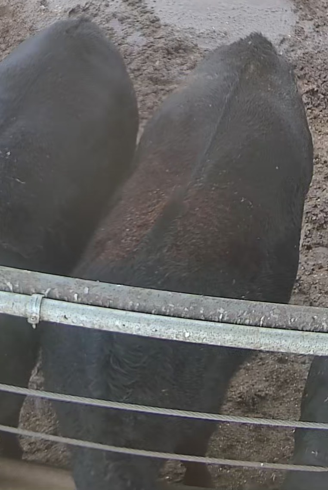 | COW_02 window id COW_07 48 h stitched id map | 22 min |
| 0.38 → 0.39 +0.01 rank 1 48 h: 0.37 | none confirmed | no alert tier stays Check on the next pen ride; no confirmed visible sign; risk 0.39 below the alert line 0.45; 0 indicator(s) at z >= 2 (needs 2) | ||||||||||||||||||||||||
 | COW_01 window id COW_06 48 h stitched id map | 31 min |
| 0.35 → 0.34 -0.01 rank 2 48 h: 0.33 | none confirmed | no alert tier stays Check on the next pen ride; no confirmed visible sign; risk 0.34 below the alert line 0.45; 0 indicator(s) at z >= 2 (needs 2) | ||||||||||||||||||||||||
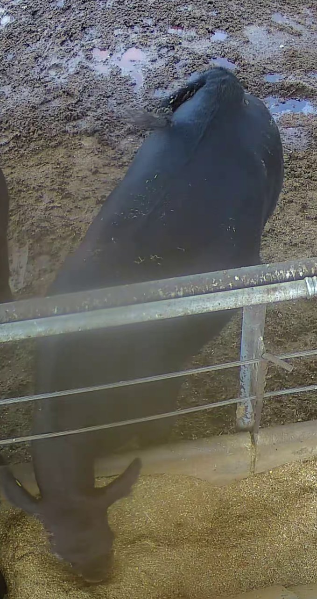 | COW_10 window id COW_04 48 h stitched id map | 17 min |
| 0.19 → 0.27 +0.09 rank 3 48 h: 0.26 | none confirmed | ALERT tier Watch list -> Check on the next pen ride (live risk 0.27 >= 0.25 and rank 3 (top 3)); 2 indicators at z >= 2 while rank 3 (top 3): time lying 76% vs herd 22% in the same window (z +3.0); time alone (> 5 m from all herdmates) 80% vs herd 36% in the same window (z +3.0) | ||||||||||||||||||||||||
 | COW_03 window id COW_08 48 h stitched id map | 28 min |
| 0.20 → 0.24 +0.04 rank 4 48 h: 0.16 | none confirmed | no alert tier stays Watch list; no confirmed visible sign; risk 0.24 below the alert line 0.45; 1 indicator(s) at z >= 2 (needs 2) | ||||||||||||||||||||||||
 | COW_09 window id COW_02 48 h stitched id map | 37 min |
| 0.16 → 0.17 +0.01 rank 5 48 h: 0.18 | none confirmed | no alert tier stays Watch list; no confirmed visible sign; risk 0.17 below the alert line 0.45; 0 indicator(s) at z >= 2 (needs 2) | ||||||||||||||||||||||||
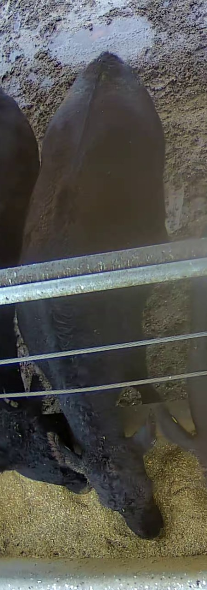 | COW_04 window id COW_05 48 h stitched id map | 26 min |
| 0.11 → 0.11 -0.00 rank 7 48 h: 0.15 | none confirmed | no alert tier stays Normal; no confirmed visible sign; risk 0.11 below the alert line 0.45; 0 indicator(s) at z >= 2 (needs 2) | ||||||||||||||||||||||||
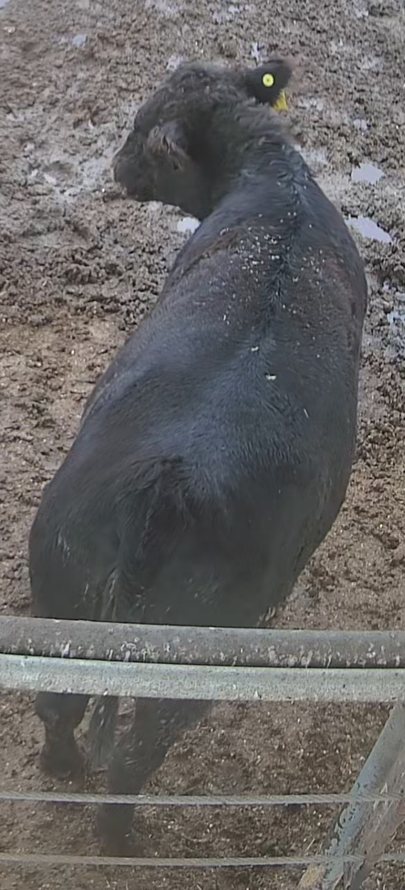 | COW_07 window id COW_01 48 h stitched id map | 38 min |
| 0.15 → 0.10 -0.05 rank 9 48 h: 0.13 | none confirmed | no alert tier stays Normal; no confirmed visible sign; risk 0.10 below the alert line 0.45; 0 indicator(s) at z >= 2 (needs 2) | ||||||||||||||||||||||||
 | COW_06 window id COW_03 48 h stitched id map | 33 min |
| 0.09 → 0.06 -0.03 rank 10 48 h: 0.12 | none confirmed | no alert tier stays Normal; no confirmed visible sign; risk 0.06 below the alert line 0.45; 0 indicator(s) at z >= 2 (needs 2) |
Every crop the VLM checked
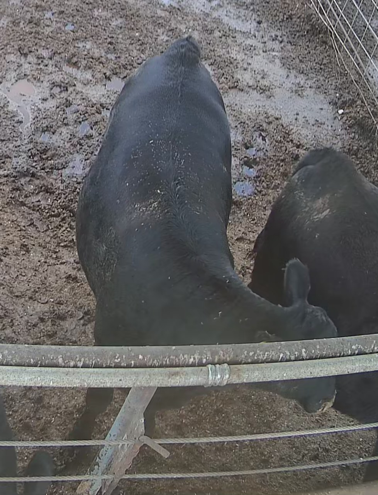
VLM saw: ears not_visible, head not visible, discharge unclear, standing True, feeding False, tracker speed 0.22 m/s
Outcome: Nothing flagged
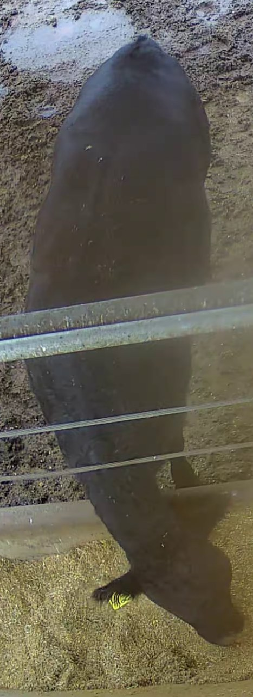
VLM saw: ears not_visible, head not visible, discharge unclear, standing True, feeding unclear, tracker speed 0.39 m/s
Outcome: Nothing flagged

VLM saw: ears normal, head level, discharge unclear, standing True, feeding False, tracker speed 0.17 m/s
Outcome: Nothing flagged

VLM saw: ears not_visible, head not visible, discharge unclear, standing True, feeding False, tracker speed 0.96 m/s
Outcome: Nothing flagged
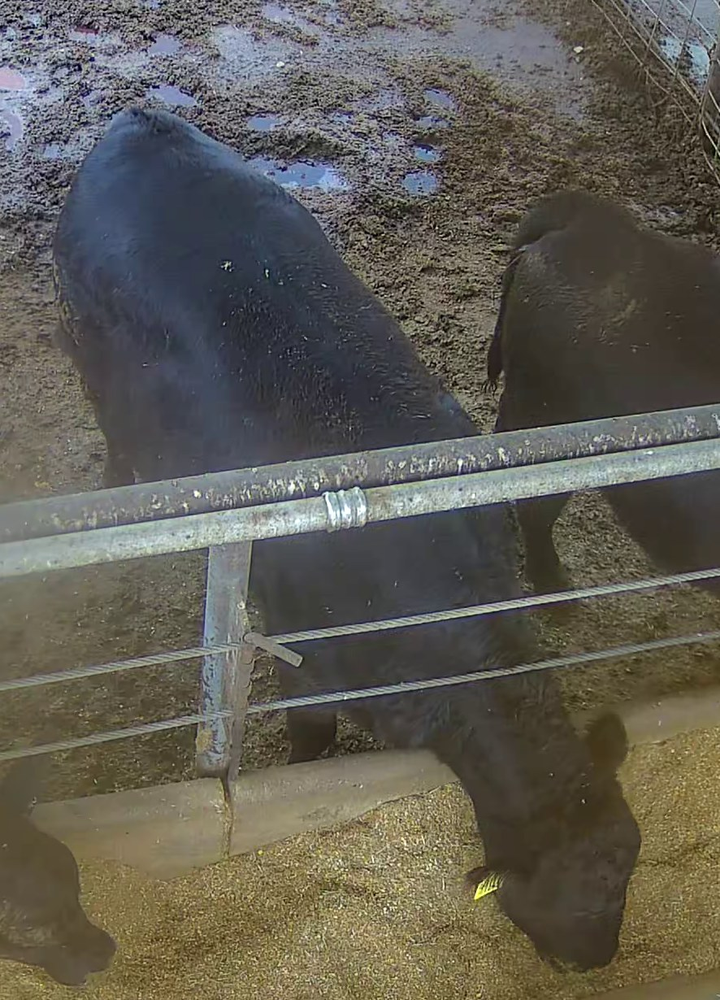
VLM saw: ears unclear, head unclear, discharge unclear, standing unclear, feeding unclear, tracker speed 0.11 m/s
Outcome: Nothing flagged
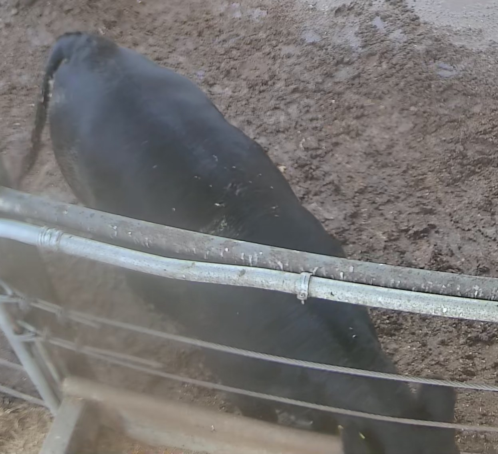
VLM saw: ears unclear, head unclear, discharge unclear, standing unclear, feeding unclear, tracker speed 0.06 m/s
Outcome: Nothing flagged
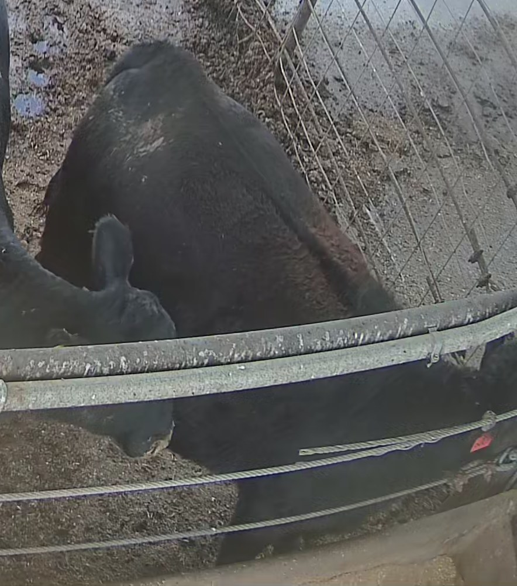
VLM saw: ears unclear, head unclear, discharge unclear, standing unclear, feeding unclear, tracker speed 0.66 m/s
Outcome: Nothing flagged

VLM saw: ears unclear, head unclear, discharge unclear, standing unclear, feeding unclear, tracker speed 0.30 m/s
Outcome: Nothing flagged

VLM saw: ears unclear, head unclear, discharge unclear, standing unclear, feeding unclear, tracker speed 0.10 m/s
Outcome: Nothing flagged
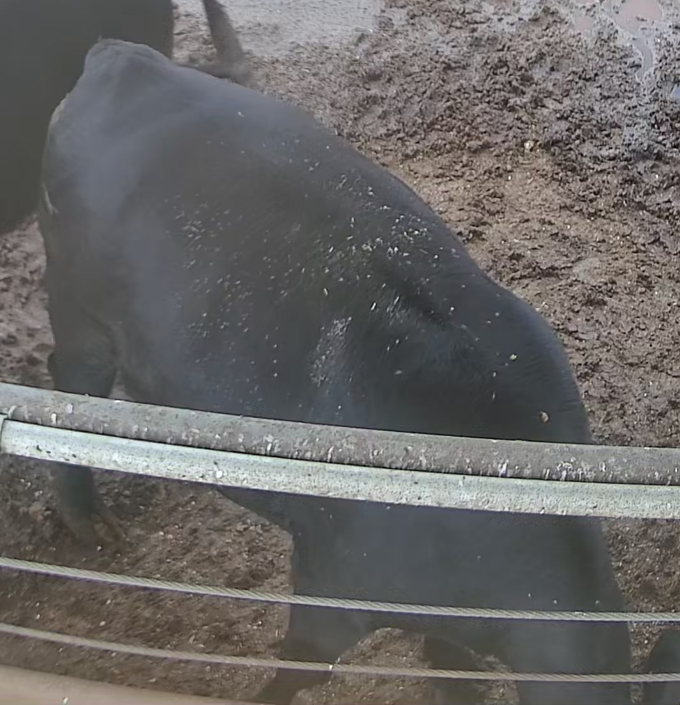
VLM saw: ears unclear, head unclear, discharge unclear, standing unclear, feeding unclear, tracker speed 0.44 m/s
Outcome: Nothing flagged
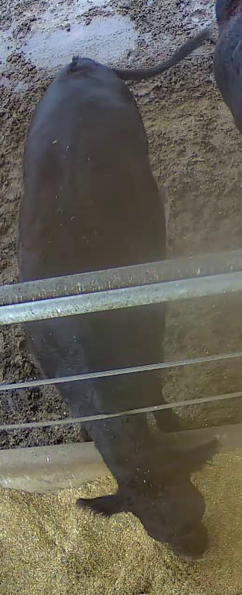
VLM saw: ears unclear, head unclear, discharge unclear, standing unclear, feeding unclear, tracker speed 0.09 m/s
Outcome: Nothing flagged
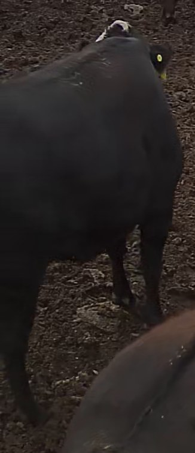
VLM saw: ears unclear, head unclear, discharge unclear, standing unclear, feeding unclear, tracker speed 1.39 m/s
Outcome: Nothing flagged

VLM saw: ears not_visible, head below withers, discharge unclear, standing True, feeding True, tracker speed 0.18 m/s
Outcome: Nothing flagged
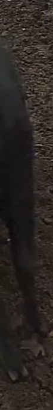
VLM saw: ears not_visible, head not visible, discharge unclear, standing unclear, feeding False, tracker speed 0.62 m/s
Outcome: Nothing flagged
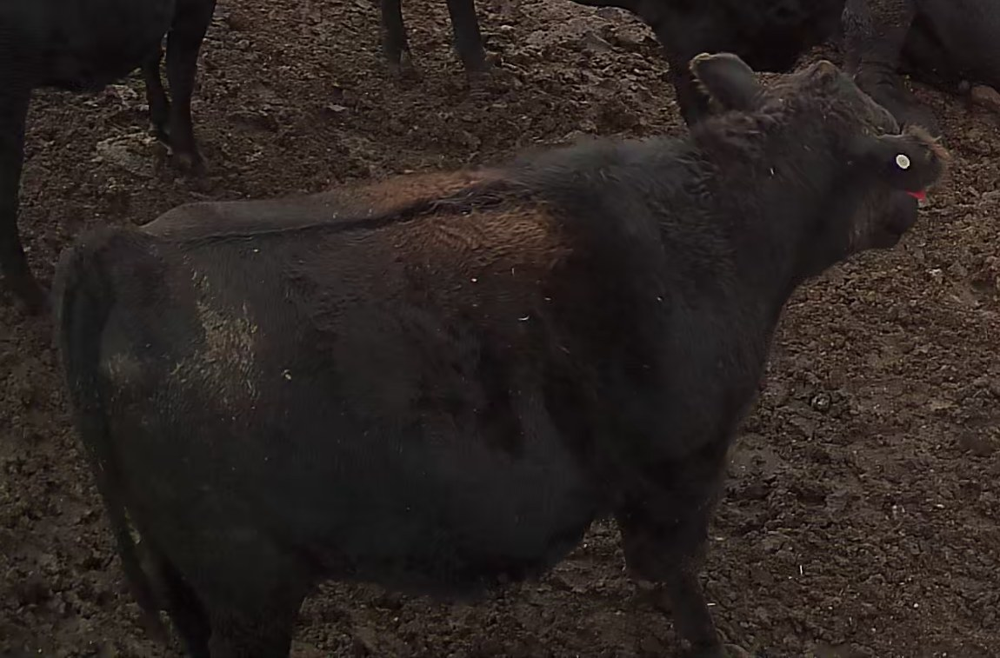
VLM saw: ears normal, head level, discharge no, standing True, feeding False, tracker speed 0.54 m/s
Outcome: Nothing flagged
Nov 08 13:26 – 14:25
8 cows · cameras cam1, cam2, cam3 · 0 alert(s) · signs: none confirmed · scored in 4 s
No new alert in this window. Each cow's reason is below.
Every cow: evidence and decision
| close view | cow · how the id was found | seen | her numbers vs the herd in this window | risk | visible signs | decision and why | ||||||||||||||||||||||||
|---|---|---|---|---|---|---|---|---|---|---|---|---|---|---|---|---|---|---|---|---|---|---|---|---|---|---|---|---|---|---|
no close view | COW_02 window id COW_04 48 h stitched id map | 59 min |
| 0.36 → 0.38 +0.02 rank 1 48 h: 0.37 | none confirmed | no alert tier stays Check on the next pen ride; no confirmed visible sign; risk 0.38 below the alert line 0.45; 0 indicator(s) at z >= 2 (needs 2) | ||||||||||||||||||||||||
no close view | COW_01 window id COW_01 48 h stitched id map | 57 min |
| 0.32 → 0.35 +0.03 rank 2 48 h: 0.33 | none confirmed | no alert tier stays Check on the next pen ride; no confirmed visible sign; risk 0.35 below the alert line 0.45; 1 indicator(s) at z >= 2 (needs 2) | ||||||||||||||||||||||||
 | COW_03 window id COW_07 48 h stitched id map | 59 min |
| 0.18 → 0.20 +0.02 rank 3 48 h: 0.16 | none confirmed | no alert tier stays Watch list; no confirmed visible sign; risk 0.20 below the alert line 0.45; 0 indicator(s) at z >= 2 (needs 2) | ||||||||||||||||||||||||
 | COW_10 window id COW_08 48 h stitched id map | 59 min |
| 0.28 → 0.19 -0.10 rank 4 48 h: 0.26 | none confirmed | no alert tier Check on the next pen ride -> Watch list (live risk 0.19, rank 4); no confirmed visible sign; risk 0.19 below the alert line 0.45; 1 indicator(s) at z >= 2 (needs 2) | ||||||||||||||||||||||||
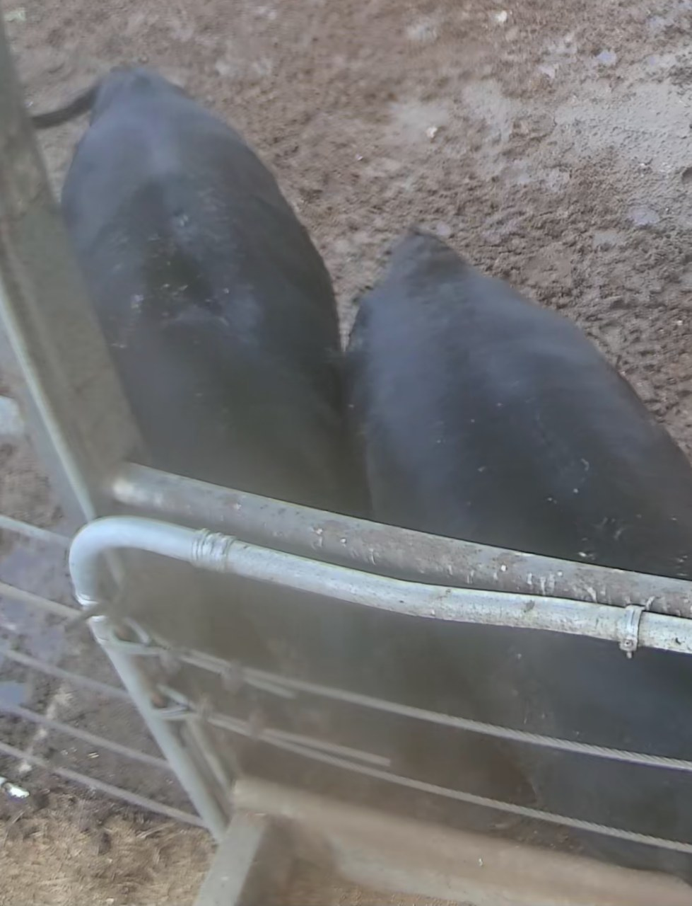 | COW_09 window id COW_02 48 h stitched id map | 55 min |
| 0.18 → 0.16 -0.03 rank 5 48 h: 0.18 | none confirmed | no alert tier stays Watch list; no confirmed visible sign; risk 0.16 below the alert line 0.45; 0 indicator(s) at z >= 2 (needs 2) | ||||||||||||||||||||||||
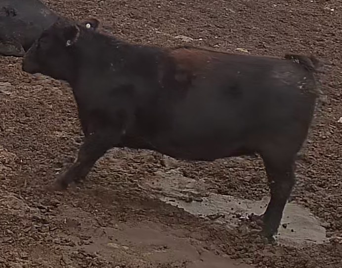 | COW_07 window id COW_06 48 h stitched id map | 59 min |
| 0.14 → 0.15 +0.01 rank 7 48 h: 0.13 | none confirmed | no alert tier stays Normal; no confirmed visible sign; risk 0.15 below the alert line 0.45; 0 indicator(s) at z >= 2 (needs 2) | ||||||||||||||||||||||||
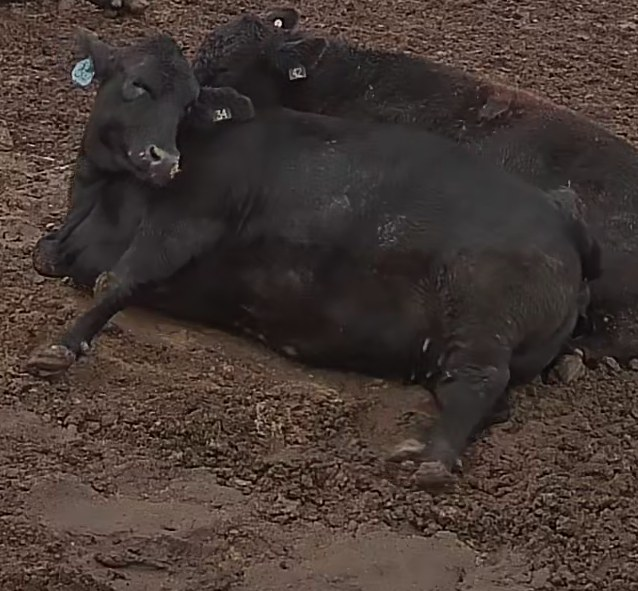 | COW_04 window id COW_05 48 h stitched id map | 43 min |
| 0.14 → 0.11 -0.03 rank 8 48 h: 0.15 | none confirmed | no alert tier stays Normal; no confirmed visible sign; risk 0.11 below the alert line 0.45; 0 indicator(s) at z >= 2 (needs 2) | ||||||||||||||||||||||||
 | COW_06 window id COW_03 48 h stitched id map | 59 min |
| 0.12 → 0.09 -0.03 rank 10 48 h: 0.12 | none confirmed | no alert tier stays Normal; no confirmed visible sign; risk 0.09 below the alert line 0.45; 0 indicator(s) at z >= 2 (needs 2) |
Every crop the VLM checked

VLM saw: ears not_visible, head not visible, discharge unclear, standing unclear, feeding False, tracker speed 0.96 m/s
Outcome: Nothing flagged
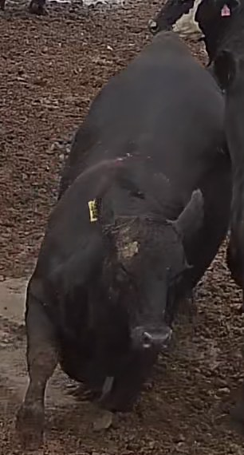
VLM saw: ears normal, head below withers, discharge no, standing True, feeding False, tracker speed 0.18 m/s
Outcome: head low flagged, then dropped by measurement: the tracker had her moving 0.18 m/s (head low while walking is normal)

VLM saw: ears normal, head level, discharge unclear, standing False, feeding False, tracker speed 0.40 m/s
Outcome: Nothing flagged
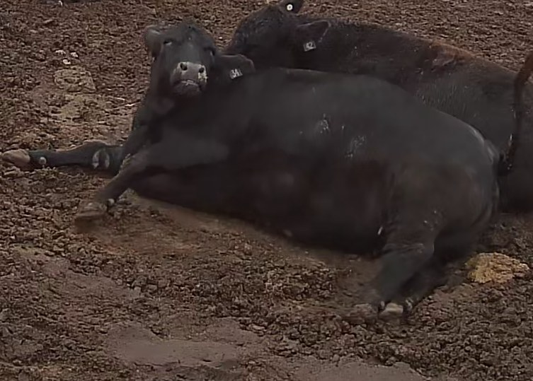
VLM saw: ears normal, head level, discharge unclear, standing False, feeding False, tracker speed 0.24 m/s
Outcome: Nothing flagged
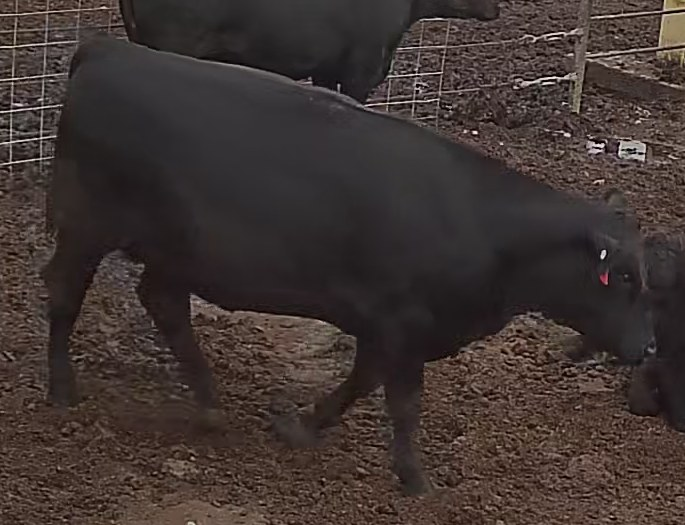
VLM saw: ears normal, head below withers, discharge unclear, standing True, feeding False, tracker speed 0.56 m/s
Outcome: head low flagged, then dropped by measurement: the tracker had her moving 0.56 m/s (head low while walking is normal)

VLM saw: ears normal, head level, discharge no, standing True, feeding False, tracker speed 0.23 m/s
Outcome: Nothing flagged
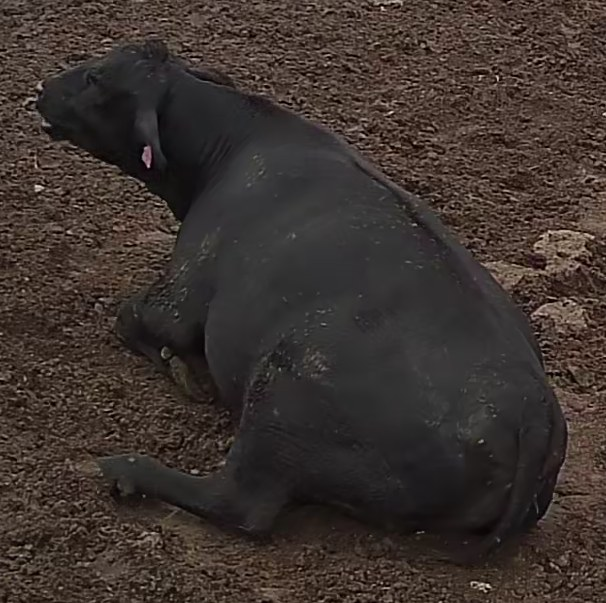
VLM saw: ears droop, head level, discharge unclear, standing False, feeding False, tracker speed 0.02 m/s
Outcome: ears looked low, but she is not standing (lying / resting): ear carriage is only judged on a standing cow, so not flagged
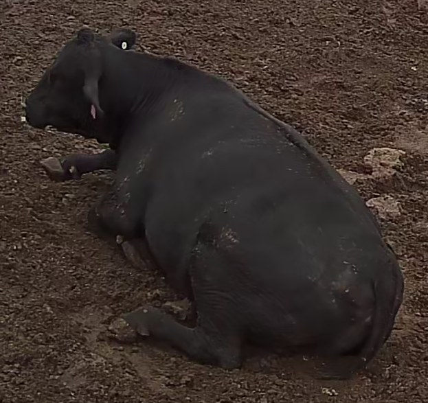
VLM saw: ears normal, head level, discharge unclear, standing False, feeding False, tracker speed 0.01 m/s
Outcome: Nothing flagged
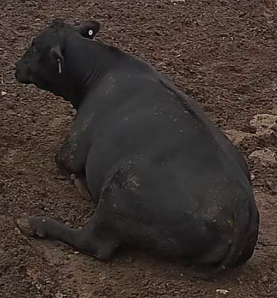
VLM saw: ears normal, head level, discharge unclear, standing False, feeding False, tracker speed 0.04 m/s
Outcome: Nothing flagged
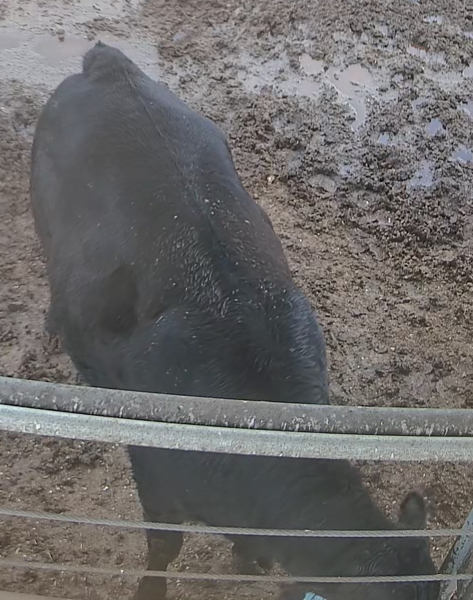
VLM saw: ears normal, head below withers, discharge unclear, standing True, feeding True, tracker speed 0.13 m/s
Outcome: Nothing flagged
Nov 08 12:28 – 13:28
8 cows · cameras cam1, cam3 · 0 alert(s) · signs: none confirmed · scored in 4 s
No new alert in this window. Each cow's reason is below.
Every cow: evidence and decision
| close view | cow · how the id was found | seen | her numbers vs the herd in this window | risk | visible signs | decision and why | ||||||||||||||||||||||||
|---|---|---|---|---|---|---|---|---|---|---|---|---|---|---|---|---|---|---|---|---|---|---|---|---|---|---|---|---|---|---|
no close view | COW_02 window id COW_02 48 h stitched id map | 59 min |
| 0.37 → 0.36 -0.01 rank 1 48 h: 0.37 | none confirmed | no alert tier stays Check on the next pen ride; no confirmed visible sign; risk 0.36 below the alert line 0.45; 0 indicator(s) at z >= 2 (needs 2) | ||||||||||||||||||||||||
 | COW_01 window id COW_07 48 h stitched id map | 57 min |
| 0.33 → 0.32 -0.01 rank 2 48 h: 0.33 | none confirmed | no alert tier stays Check on the next pen ride; no confirmed visible sign; risk 0.32 below the alert line 0.45; 0 indicator(s) at z >= 2 (needs 2) | ||||||||||||||||||||||||
 | COW_10 window id COW_08 48 h stitched id map | 59 min |
| 0.26 → 0.28 +0.03 rank 3 48 h: 0.26 | none confirmed | no alert tier stays Check on the next pen ride; no confirmed visible sign; risk 0.28 below the alert line 0.45; 0 indicator(s) at z >= 2 (needs 2) | ||||||||||||||||||||||||
no close view | COW_09 window id COW_01 48 h stitched id map | 58 min |
| 0.18 → 0.18 -0.00 rank 4 48 h: 0.18 | none confirmed | no alert tier stays Watch list; no confirmed visible sign; risk 0.18 below the alert line 0.45; 0 indicator(s) at z >= 2 (needs 2) | ||||||||||||||||||||||||
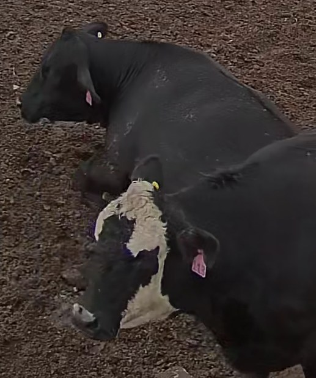 | COW_03 window id COW_06 48 h stitched id map | 60 min |
| 0.16 → 0.18 +0.01 rank 5 48 h: 0.16 | none confirmed | no alert tier stays Watch list; no confirmed visible sign; risk 0.18 below the alert line 0.45; 0 indicator(s) at z >= 2 (needs 2) | ||||||||||||||||||||||||
 | COW_04 window id COW_03 48 h stitched id map | 32 min |
| 0.15 → 0.14 -0.01 rank 7 48 h: 0.15 | none confirmed | no alert tier Watch list -> Normal (live risk 0.14, rank 7: herd-typical); no confirmed visible sign; risk 0.14 below the alert line 0.45; 0 indicator(s) at z >= 2 (needs 2) | ||||||||||||||||||||||||
no close view | COW_07 window id COW_04 48 h stitched id map | 60 min |
| 0.13 → 0.14 +0.01 rank 8 48 h: 0.13 | none confirmed | no alert tier stays Normal; no confirmed visible sign; risk 0.14 below the alert line 0.45; 0 indicator(s) at z >= 2 (needs 2) | ||||||||||||||||||||||||
no close view | COW_06 window id COW_05 48 h stitched id map | 59 min |
| 0.12 → 0.12 -0.00 rank 9 48 h: 0.12 | none confirmed | no alert tier stays Normal; no confirmed visible sign; risk 0.12 below the alert line 0.45; 0 indicator(s) at z >= 2 (needs 2) |
Every crop the VLM checked
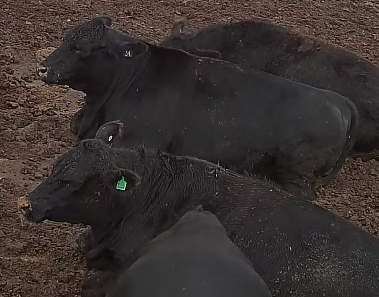
VLM saw: ears unclear, head unclear, discharge unclear, standing unclear, feeding unclear, tracker speed 0.30 m/s
Outcome: Nothing flagged

VLM saw: ears unclear, head unclear, discharge unclear, standing unclear, feeding unclear, tracker speed 0.55 m/s
Outcome: Nothing flagged
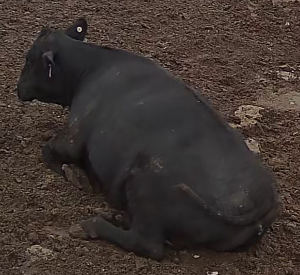
VLM saw: ears unclear, head unclear, discharge unclear, standing unclear, feeding unclear, tracker speed 0.03 m/s
Outcome: Nothing flagged
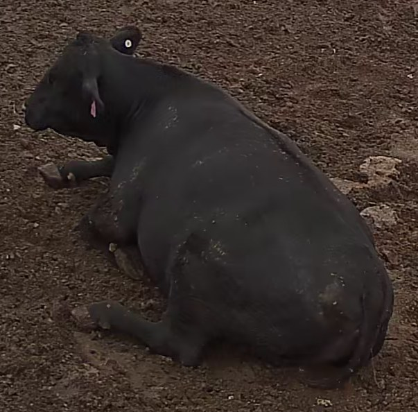
VLM saw: ears unclear, head unclear, discharge unclear, standing unclear, feeding unclear, tracker speed 0.02 m/s
Outcome: Nothing flagged
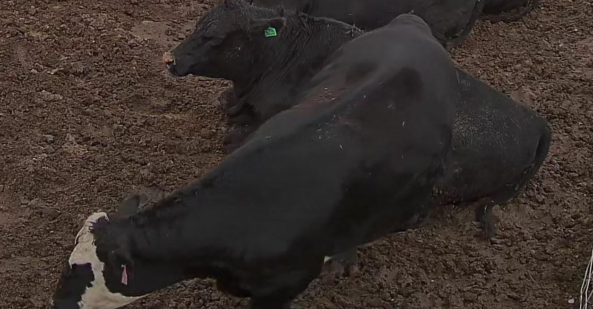
VLM saw: ears normal, head below withers, discharge no, standing False, feeding False, tracker speed 0.50 m/s
Outcome: Nothing flagged
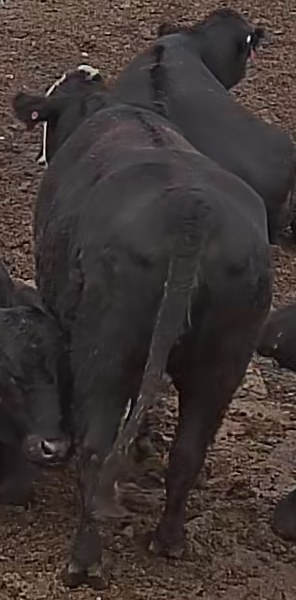
VLM saw: ears not_visible, head not visible, discharge unclear, standing True, feeding False, tracker speed 0.17 m/s
Outcome: Nothing flagged
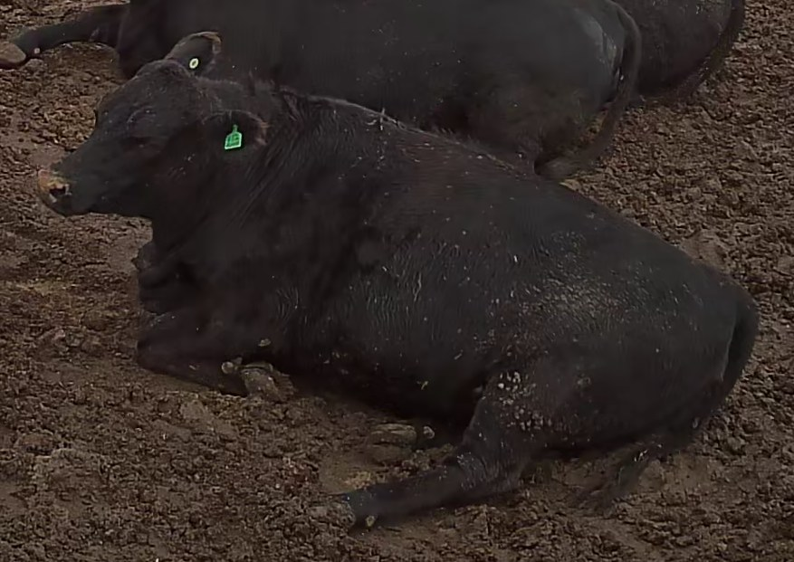
VLM saw: ears normal, head level, discharge no, standing False, feeding False, tracker speed 0.01 m/s
Outcome: Nothing flagged
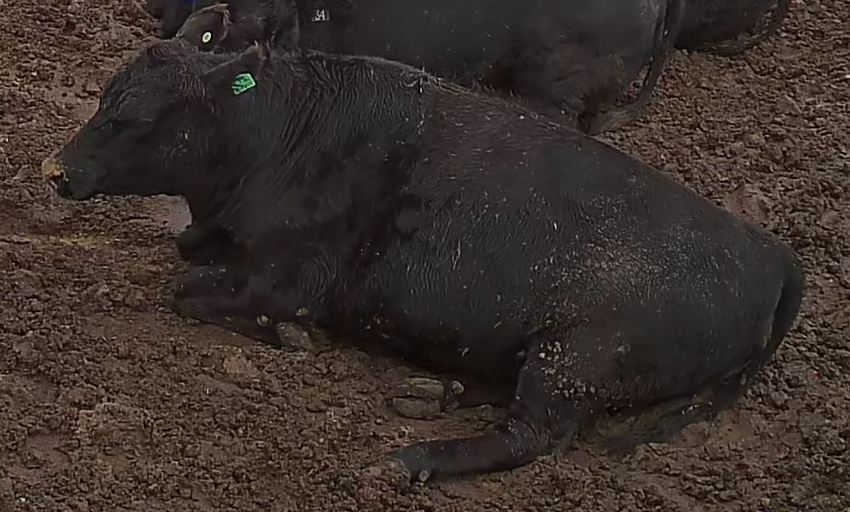
VLM saw: ears normal, head level, discharge no, standing False, feeding False, tracker speed 0.01 m/s
Outcome: Nothing flagged
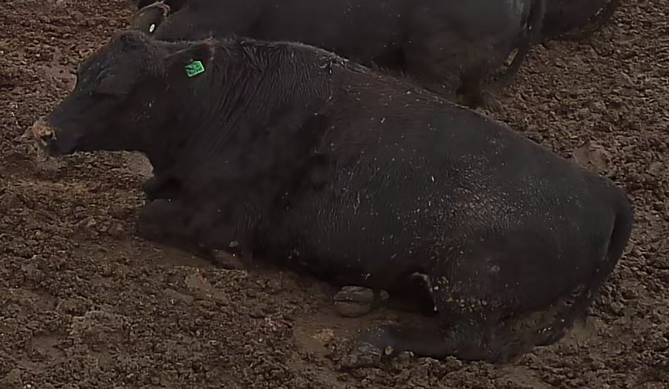
VLM saw: ears normal, head below withers, discharge unclear, standing False, feeding False, tracker speed 0.01 m/s
Outcome: Nothing flagged